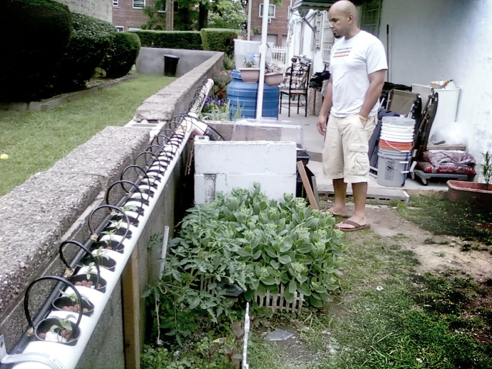

Two hands-on growing experiments in the Bronx, from a backyard hydroponic system to a separate 2013 balcony project. Explore the photos, the process and what grew along the way.

The original growing experiment in the Bronx.
The original growing system
The first part of this archive follows the original system: building the pipes and reservoir, starting seeds, keeping an eye on the nutrient solution and watching the plants grow. Swipe through each set of photographs as you read, or tap any image to open the larger viewer.
Building the original system
Two PVC pipes, a reservoir, pumps and drip lines made up the original Bronx growing experiment.
Two 10-foot PVC pipes were drilled with 3-inch openings, creating more than 80 planting sites with room for roughly 1–4 plants each. A lot of growing space in a small footprint.The reservoir and recirculating pump. Water travels up through the system, then drains back through the blue return pipe.The nutrient reservoir, with a water pump feeding the plants and an air pump adding oxygen to the water.The germination station beside the reservoir. The air pump and electrical wiring stay protected from rain inside the plastic container, while a covering blocks sunlight from the clear reservoir to help limit algae growth.
← Swipe to explore 4 photos · Tap to enlarge →
From seed to system
Seeds started in a germination station before moving into Hydroton clay pebbles and the growing system.
The germination station, where seeds began before moving into the hydroponic system.One day after germination and ready for the hydroponic system.Hydroton expanded clay pebbles support the plants while holding moisture and leaving room for water and air around the roots.One week after transplanting into the hydroponic system.Two-week-old oregano growing in a modified plastic cup, with the bottom opened so the roots could reach the flowing water.Jalapeños, three weeks from seed germination.Thyme, three weeks from seed germination.Tomatoes, three weeks from seed germination.Basil, three weeks from seed germination, shown after an early harvest and trim to encourage fuller growth.
← Swipe to explore 9 photos · Tap to enlarge →
Water, nutrients and pH
A look at the reservoir, nutrient supplies and the hands-on process of checking and adjusting the water.
Some of the nutrient essentials used in the system, including nitrogen, phosphate, magnesium, soluble potash and other nutrients.A pH check helped keep the nutrient solution around 5.8, where the plants could take up nutrients effectively.The pH test kit used to check the reservoir.Three drops of test solution reveal the water’s pH by color.Good grief. That pH is too low.Ta-daaaaaa. pH Up to the rescue. 😎A little pH Up goes into the reservoir, followed by another water test.Perfect. The pH, anyway. Ignore the SpongeBob jammies. 😂
← Swipe to explore 8 photos · Tap to enlarge →
Watching everything grow
Oregano, basil, tomatoes, jalapeños and eggplant at different stages, from new roots to flowering plants.
Eggplant roots spreading through the hydroponic system, with plenty of room to develop in the flowing nutrient solution.Three-week-old tomato plants needed extra support as the growth started reaching in every direction.One-month-old jalapeños, already flowering.One-month-old basil, one week after harvesting and trimming, already filling back in.One-month-old cherry tomatoes, already flowering and producing fruit.One-month-old tomato plants reaching about four feet tall.One-month-old eggplant with broad green foliage and the first blooms already appearing.Five-week-old jalapeños beginning to produce peppers.Five-week-old cherry tomatoes.Seven-week-old jalapeño plants. Ten plants in the system were producing roughly 30 or more peppers each.Small cherry tomatoes beginning to appear.Flowering basil attracting bees to the pollen.Seven-week-old tomatoes.Seven-week-old eggplant.Seven-week-old cherry tomatoes, documented here as they continued to size up.Seven-week-old tomatoes. running up the pole.
← Swipe to explore 16 photos · Tap to enlarge →
Harvest time
The results of the experiment, including tomatoes, eggplants, jalapeños and basil that became pesto.
The first basil harvest, headed straight toward a batch of pesto. Grandma would have been proud.
Ingredients
2 cups packed fresh basil leaves
2 cloves garlic
1/4 cup pine nuts
2/3 cup extra-virgin olive oil, divided
Kosher salt and freshly ground black pepper, to taste
1/2 cup freshly grated Pecorino cheese
Directions
Combine the basil, garlic, and pine nuts in a food processor and pulse until coarsely chopped. Add 1/2 cup of the oil and process until fully incorporated and smooth. Season with salt and pepper.
If using immediately, add all the remaining oil and pulse until smooth. Transfer the pesto to a large serving bowl and mix in the cheese.
If freezing, transfer to an air-tight container and drizzle remaining oil over the top. Freeze for up to 3 months. Thaw and stir in cheese.
Copyright 2003 Television Food Network, G.P. All rights reservedBasil after harvest and trimming. Cutting from the top encourages bushier growth, while lower or side cuts can encourage taller growth. Hydroponics left plenty of room to experiment.The first tomato harvest.About eight cups of pesto from the basil harvest. Niiiiiiiice.JalapeñosNow THAT is basil.After basil harvestThe first tomato batch. Worth a whistle.A harvest of 12 eggplants.Eggplant lasagna it is. 😎Fresh jalapeños ready for preserving with vinegar, olive oil, salt and pepper.Yes, this grew in a backyard in the freakin' Bronx. 11.6 lbs and 15 inches long.
← Swipe to explore 12 photos · Tap to enlarge →
The separate 2013 project
Growing Up: Three Floors Above the Bronx
In 2013, a second compact hydroponic system took shape on a third-floor balcony in the Bronx. Designed for a smaller urban space, the project explored how much could be grown with very little room. These photos follow the first balcony model from construction through planting.
The first balcony model
The separate 2013 hydroponics project built for a third-floor balcony in the Bronx.
The first 2013 hydroponic model designed for balconies.A compact hydroponic system designed for an urban home, built for a third-floor balcony in the Bronx.
← Swipe to explore 2 photos · Tap to enlarge →
Planting on the balcony
After germination, seedlings moved into the balcony system. The album also documents the crops grown there.
After germination, seedlings moved into the balcony hydroponic system. The mix included tomatoes, cucumbers, eggplants, Chili peppers., Lettuce., Spinach. and a few mystery seeds.Cucumbers.Small tomatoes.Lettuce.Spinach.Chili peppers.
← Swipe to explore 6 photos · Tap to enlarge →
Alex Reynoso Art · Hydroponics Collection
From the Garden to the Wardrobe 🌱
Turns out growing plants without soil can grow a few ideas, too. Meet the shirts inspired by the Bronx hydroponics experiments.
See the growing system in action in the original video.
Original hydroponics walkthrough, first shared around 14 years ago.
The science behind the project
How hydroponics works
What is hydroponics?
Hydroponics is a way to grow plants without traditional soil. Instead, water carries dissolved mineral nutrients to the roots. Depending on the setup, roots may grow directly in nutrient solution or in a growing medium that supports the plant.
Common growing media include perlite, gravel, mineral wool and coconut husk. This project uses Hydroton, lightweight expanded clay pebbles that support the roots while leaving space for water and air to move through.
How a drip system works
Drip systems deliver nutrient solution to the base of each plant through small drip lines. A timer controls a submersible pump, sending solution from a reservoir to the growing medium at scheduled intervals.
Water and nutrients reach the root zone without the plants needing to grow in soil. What happens to the excess solution depends on the type of drip system.
Recovery vs. non-recovery systems
Two common approaches handle excess nutrient solution differently:
Recovery drip systems collect runoff and return it to the reservoir for reuse. This can make more efficient use of nutrient solution, but the reservoir's pH and nutrient concentration need regular monitoring and adjustment as the solution recirculates.
Non-recovery drip systems do not collect the runoff. Because used solution does not return to the reservoir, its composition is more predictable. Watering schedules need closer control to provide enough solution without creating unnecessary waste.
The growing medium: Hydroton expanded clay pebbles. Lightweight, reusable when properly cleaned, and well suited to drip-fed hydroponic setups.
A little water, a little science
From the reservoir and pump to the drip lines and clay pebbles, hydroponics brings together a few simple ideas: support the roots, supply the nutrients and pay attention to the water. The video above offers a look at this growing experiment in action.